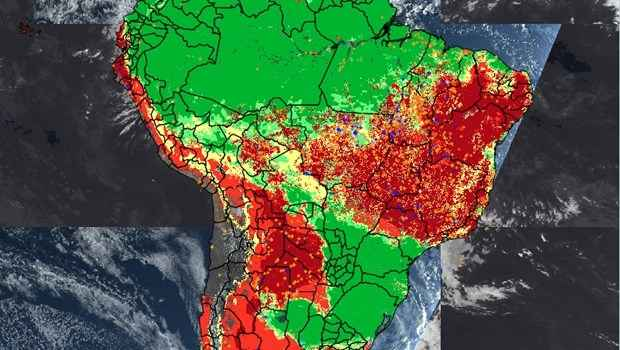

Pesquisa: Análise da Imagem
Observe a imagem abaixo e responda às perguntas a seguir.

1. Qual a região com a maior concentração de 'pontos quentes' (áreas vermelhas) na imagem?
Norte da América do Sul (Amazônia)
Região Andina
Sul do Brasil e países vizinhos
Litoral Atlântico
2. As áreas em verde na imagem provavelmente indicam:
Áreas com alta atividade
Áreas com baixa ou nenhuma atividade
Cor de contraste sem significado
Cidades populosas
3. Que país da América do Sul parece ter a maior área coberta por 'pontos quentes'?
Argentina
Chile
Brasil
Colômbia
4. Como você descreveria a distribuição geral dos 'pontos quentes' pela América do Sul?
Uniforme em todo o continente
Concentrada na porção leste e central
Mais intensa nas regiões costeiras
Distribuída principalmente no sul do continente
5. Baseando-se na imagem, qual seria a provável natureza do fenômeno que o mapa de calor está ilustrando?
Padrões de migração animal
Concentração populacional
Eventos de desmatamento/incêndios
Níveis de poluição da água
Anterior
Próxima
Concluir esta Pesquisa
Questão
1
de
X
Enviando suas respostas...